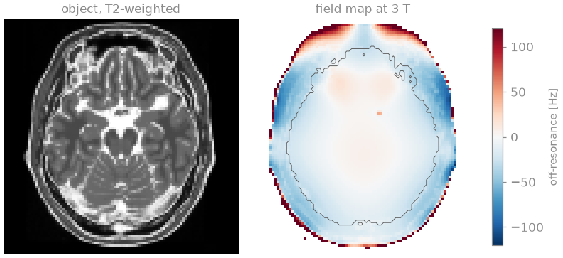
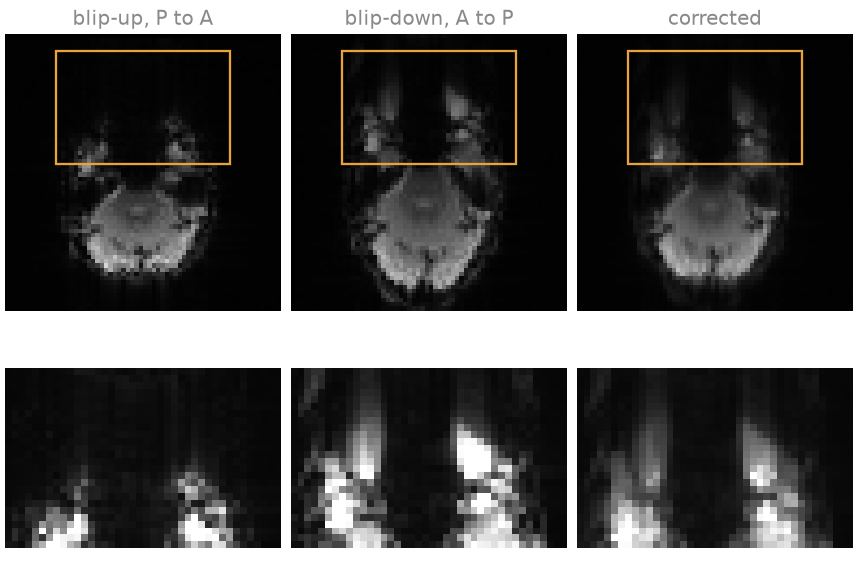
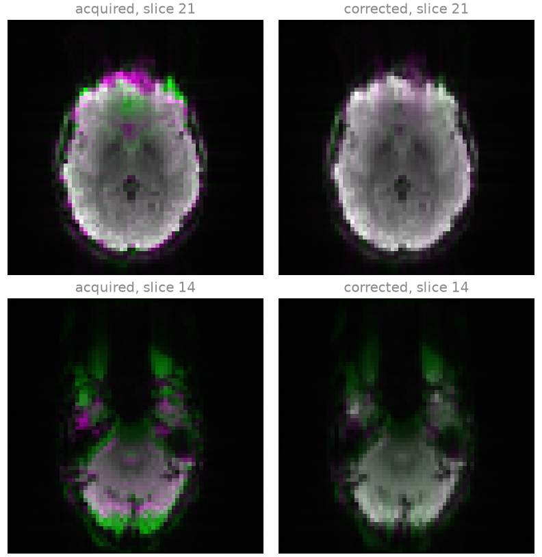
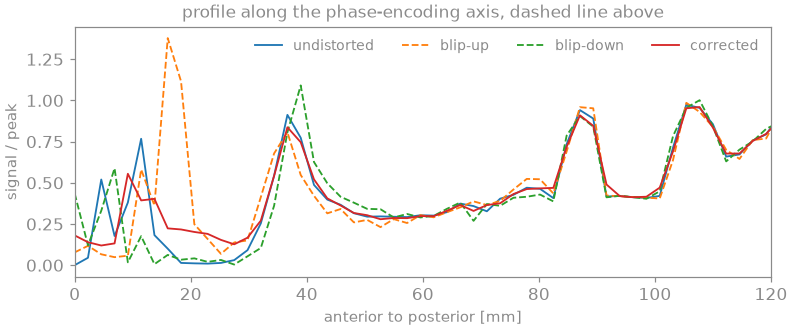
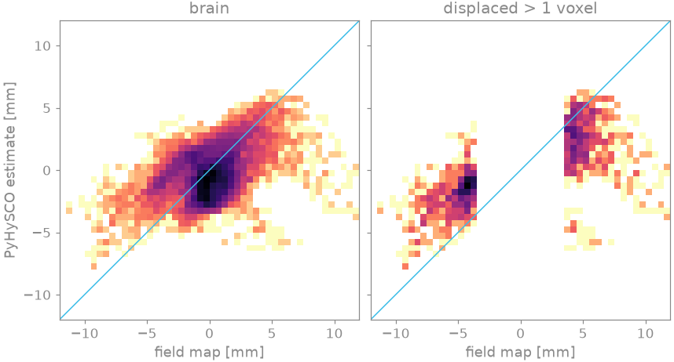

Note
Go to the end to download the full example code.
Susceptibility distortion in EPI#
In an echo-planar image, the phase-encoding direction is sampled at the echo spacing rather than the dwell time, so its bandwidth per pixel is a few tens of hertz. A spin off resonance by \(\Delta f\) is displaced along the phase-encoding axis by \(\Delta f\) divided by that bandwidth, which near the frontal sinus and the petrous bone amounts to several millimetres at 3 T: the orbitofrontal cortex and the temporal poles are compressed or stretched, and signal piles up where neighbouring voxels are displaced onto the same location.
The displacement changes sign with the direction in which k-space is
traversed. Two acquisitions with opposite phase-encoding polarity,
blip-up and blip-down, are distorted in opposite directions, and the
displacement field that brings them into register is the correction
[1]. This example corrects such a pair, measured at 3 T and
published on OpenNeuro [3], with
bartorch.tools.correct_susceptibility(), which runs PyHySCO [2],
and compares the estimated displacement with the one predicted by a
gradient-echo field map of the same subject.
Prerequisites. Tensors and commands.
Learning objectives
Read a BIDS EPI series and its sidecar, and compute the bandwidth per pixel along phase encoding and the displacement per hertz of off-resonance.
State the direction of the displacement in anatomical terms from the phase-encoding direction and the image orientation.
Recognise the compression, stretching and signal pile-up of susceptibility distortion, and their reversal between the two phase-encoding polarities.
Estimate the displacement field from a reversed phase-encoding pair and correct both images, including their intensity.
Assess the estimated displacement against an independent field map, and the correction by the agreement of the two corrected images.
import json
import torch
from nibabel.orientations import aff2axcodes
import bartorch.tools as bt
from bartorch.io import read_nifti
The data#
The dataset holds gradient-echo EPI series of one subject acquired on a
Siemens Prisma at 3 T, 64 x 64 matrix, 44 axial slices, 3.75 x 3.75 x 4 mm,
with the same protocol and shim and opposite phase-encoding polarity, and a
dual-echo gradient-echo field map on the same grid. Each EPI series has five
volumes; their mean is taken to raise the signal-to-noise ratio.
read_nifti() returns the volumes as (volumes, z, y,
x) and the affine from voxel indices (x, y, z) to RAS millimetres;
the sidecars hold the timings of the readout.
blip_up_file = CACHE / "sub-1/fmap/sub-1_dir-PA_epi"
blip_down_file = CACHE / "sub-1/func/sub-1_task-rest_acq-AP_bold"
blip_up = read_nifti(f"{blip_up_file}.nii.gz")
blip_down = read_nifti(f"{blip_down_file}.nii.gz")
sidecar_up = json.loads(Path(f"{blip_up_file}.json").read_text())
sidecar_down = json.loads(Path(f"{blip_down_file}.json").read_text())
affine = blip_up.affine
voxel_mm = tuple(float(v) for v in affine[:3, :3].norm(dim=0).flip(0)) # (z, y, x)
print(f"{tuple(blip_up.image.shape)} volumes, voxel (z, y, x) {voxel_mm} mm")
print("voxel axes x, y, z point to", "".join(aff2axcodes(affine.numpy())))
for label, sidecar in (("blip-up", sidecar_up), ("blip-down", sidecar_down)):
print(f"{label:9s} {sidecar['SeriesDescription']}: {sidecar['PhaseEncodingDirection']}")
up = blip_up.image.mean(0)
down = blip_down.image.mean(0)
(5, 44, 64, 64) volumes, voxel (z, y, x) (4.0, 3.75, 3.75) mm
voxel axes x, y, z point to LAS
blip-up BOLD_3mm_matched_0.55esp_topup: j
blip-down BOLD_3mm_matched_0.55esp: j-
The voxel axis x points to the subject’s left and y to anterior, so
PhaseEncodingDirection j is posterior to anterior and j- anterior
to posterior: phase encoding is along the anterior-posterior axis of the
head and the readout left-right. The figures show the slices with anterior
at the top and the subject’s left on the right.
Displacement along the phase-encoding axis#
With \(N\) phase-encoding lines acquired at the effective echo spacing \(\Delta t_{esp}\) (the echo spacing divided by any parallel-imaging acceleration), the phase accrued off resonance is linear in \(k_y\), which is a displacement by
with \(\mathrm{BW}_{PE}\) the bandwidth per pixel along the
phase-encoding axis; BIDS writes \((N - 1)\,\Delta t_{esp}\) as
TotalReadoutTime. The displacement is along PhaseEncodingDirection
for a positive \(\Delta f\), and reversing the blips reverses it. The
readout, at a bandwidth per pixel of PixelBandwidth, is displaced by a
fraction of a voxel, which is neglected.
lines = sidecar_up["AcquisitionMatrixPE"]
echo_spacing = sidecar_up["EffectiveEchoSpacing"]
bandwidth_pe = 1 / (lines * echo_spacing)
print(f"{lines} lines at an effective echo spacing of {1e3 * echo_spacing:.2f} ms")
print(
f"bandwidth per pixel: {bandwidth_pe:.1f} Hz along phase encoding "
f"(sidecar {sidecar_up['BandwidthPerPixelPhaseEncode']} Hz), "
f"{sidecar_up['PixelBandwidth']} Hz along the readout"
)
print(f"total readout time {1e3 * sidecar_up['TotalReadoutTime']:.2f} ms")
print(
f"100 Hz off resonance: {100 / bandwidth_pe:.1f} voxels = "
f"{100 / bandwidth_pe * voxel_mm[1]:.1f} mm along phase encoding"
)
64 lines at an effective echo spacing of 0.55 ms
bandwidth per pixel: 28.4 Hz along phase encoding (sidecar 28.409 Hz), 2055 Hz along the readout
total readout time 34.65 ms
100 Hz off resonance: 3.5 voxels = 13.2 mm along phase encoding
Reference field map#
The gradient-echo field map is the phase difference \(\Delta\phi\) between two echoes, stored by the scanner as integers from 0 to 4095 for \(-\pi\) to \(\pi\), and the off-resonance is \(\Delta f = \Delta\phi / (2\pi\, \Delta\mathrm{TE})\). The phase is smoothed as a complex exponential over one voxel. The displacement it predicts for the blip-up image is \(\Delta f / \mathrm{BW}_{PE}\) voxels towards anterior.
phase_file = CACHE / "sub-1/fmap/sub-1_acq-v4_phasediff"
sidecar_phase = json.loads(Path(f"{phase_file}.json").read_text())
phase = (read_nifti(f"{phase_file}.nii.gz").image[0] - 2048) / 2048 * torch.pi
magnitude = read_nifti(str(CACHE / "sub-1/fmap/sub-1_acq-v4_magnitude1.nii.gz")).image[0]
delta_te = sidecar_phase["EchoTime2"] - sidecar_phase["EchoTime1"]
off_resonance = phase / (2 * torch.pi * delta_te)
predicted_mm = off_resonance / bandwidth_pe * voxel_mm[1]
print(
f"echo times {1e3 * sidecar_phase['EchoTime1']:.2f} and "
f"{1e3 * sidecar_phase['EchoTime2']:.2f} ms: unambiguous within "
f"+/-{1 / (2 * delta_te):.0f} Hz"
)
echo times 4.00 and 6.46 ms: unambiguous within +/-203 Hz
Correction from the reversed pair#
PyHySCO estimates the displacement field \(b\) for which the blip-up
image sampled at \(y + b\) and the blip-down image sampled at
\(y - b\), each multiplied by the Jacobian determinant of its
transformation, \(1 \pm \partial b / \partial y\), agree. The Jacobian
factor restores the intensity of voxels compressed into a pile-up or
stretched over several voxels. A smoothness penalty on \(b\) and a
constraint that keeps both transformations invertible regularize the
problem. The estimation is three-dimensional: the volume is passed with its
voxel size and the phase-encoding axis y, and \(b\) is returned in
millimetres along the voxel axis y, that is towards anterior, on the
faces between voxels.
The corrected pair#
Where the correction is right, the two corrected images are the same image. Their agreement is measured over the brain, where the corrected EPI and the field map’s magnitude both have signal, as the correlation coefficient and as the root-mean-square difference relative to the mean image.
def similarity(first, second, region=brain):
x, y = first[region].double(), second[region].double()
correlation = torch.corrcoef(torch.stack((x, y)))[0, 1].item()
return correlation, ((x - y).norm() / (0.5 * (x + y)).norm()).item()
for label, pair in (("acquired", (up, down)), ("corrected", (corrected_up, corrected_down))):
correlation, difference = similarity(*pair)
print(
f"blip-up vs blip-down, {label:9s}: correlation {correlation:.3f}, "
f"RMS difference {100 * difference:.0f} % of the mean image"
)
blip-up vs blip-down, acquired : correlation 0.871, RMS difference 21 % of the mean image
blip-up vs blip-down, corrected: correlation 0.989, RMS difference 6 % of the mean image



Slice 21 passes through the orbitofrontal cortex and slice 14 through the temporal poles and the cerebellum; the lower row of each figure enlarges the anterior part of the slice, with its own grey scale. Above the frontal sinus the off-resonance is positive: the blip-up image, phase-encoded from posterior to anterior, displaces the orbitofrontal cortex anteriorly and compresses its anterior edge into a bright rim, and the blip-down image displaces it posteriorly and flattens it. At the temporal poles, above the petrous bone and the mastoid air cells, the off-resonance is negative and the directions are exchanged: the blip-down image stretches the poles anteriorly into streaks, and the blip-up image compresses them into a few dark voxels. The corrected image, the mean of the two corrected images of the pair, places the cortex between the two and restores its intensity.
In the overlays the blip-up image is shown in magenta and the blip-down image in green, so that tissue where the two agree is grey. Before correction the frontal, temporal and occipital edges carry a magenta fringe on one side and a green fringe on the other; after correction they are grey. What remains is green at the temporal poles, where the blip-up image has lost the signal that the blip-down image has: signal lost within a voxel in one acquisition is not restored by a displacement.
Comparison with the field map#
The estimate is compared with the displacement predicted by the gradient-echo field map over the brain, and over the brain voxels where the field map predicts a displacement of more than one voxel, \(|\Delta f| > \mathrm{BW}_{PE}\): where there is a distortion to measure. Over the rest of the brain the field is close to zero, and the correlation there measures noise. The field map was acquired with its own shim, so the two fields may also differ by a smooth field of first and second order.
def correlation(first, second, region):
return torch.corrcoef(torch.stack((first[region], second[region])).double())[0, 1].item()
distorted = brain & (off_resonance.abs() > bandwidth_pe)
print("shim, EPI ", sidecar_up["ShimSetting"])
print("shim, field map", sidecar_phase["ShimSetting"])
print(
f"field over the brain: {off_resonance[brain].quantile(0.01):+.0f} to "
f"{off_resonance[brain].quantile(0.99):+.0f} Hz (1st to 99th percentile)"
)
print(
f"displaced by more than one voxel: {100 * distorted.sum() / brain.sum():.0f} % "
"of the brain voxels"
)
for label, region in (("brain", brain), ("displaced voxels", distorted)):
slope = torch.linalg.lstsq(
torch.stack((predicted_mm[region], torch.ones(int(region.sum()))), 1),
estimated_mm[region, None],
).solution[0, 0]
print(
f"estimate vs field map over the {label}: correlation "
f"{correlation(estimated_mm, predicted_mm, region):.2f}, slope {slope:.2f}"
)
shim, EPI [1746, -3889, -287, 575, 111, -87, -1, -28]
shim, field map [1747, -3883, -285, 583, 125, -23, -45, -40]
field over the brain: -45 to +47 Hz (1st to 99th percentile)
displaced by more than one voxel: 7 % of the brain voxels
estimate vs field map over the brain: correlation 0.38, slope 0.31
estimate vs field map over the displaced voxels: correlation 0.61, slope 0.30


1 voxel" class = "sphx-glr-multi-img"/>
The estimate follows the pattern of the field-map prediction: anterior displacement above the frontal sinus and in the cerebellum, posterior displacement at the temporal poles. It is smaller in amplitude, with a slope below one. Two likely causes, neither established here, are the smoothness penalty on the displacement field, which at 3.75 mm voxels flattens a displacement that changes within a few voxels, and the difference between the shims of the two acquisitions. Neither EPI image has signal in the voids above the sinus, where the field map predicts the largest displacement, so the estimate there is an extrapolation by the smoothness penalty. In practice the pair is acquired as two short series of a few volumes, the displacement field is estimated once, and it is applied to every volume of the functional or diffusion series acquired with one of the two polarities.
References#
Total running time of the script: (0 minutes 4.136 seconds)